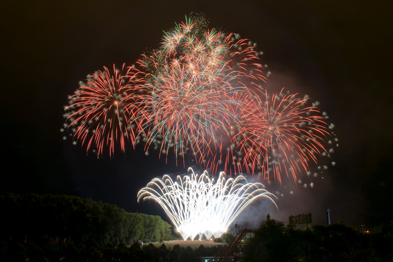

Barracas Actividad Fiestas de la Blanca

-Lugar:Recinto Ferial de Mendizabala
-Dia/s:De 15 de julio y el 12 de Agosto
-Hora:23:00
-Descripcion:https://gasteizberri.com/2022/03/las-fiestas-de-la-blanca-2022-tendran-mas-de-60-atracciones-durante-un-mes/